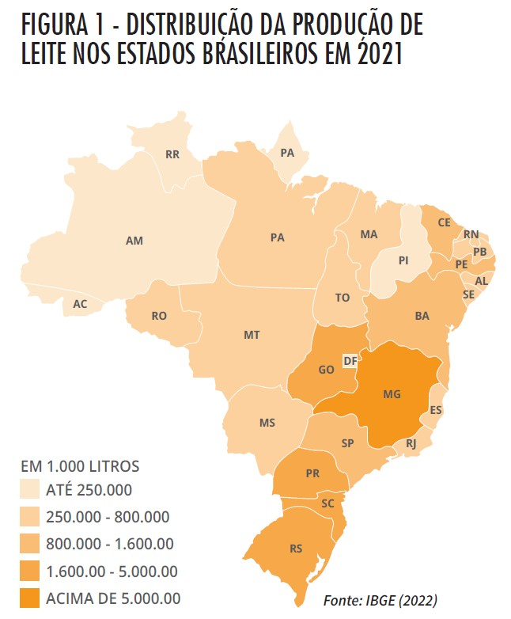
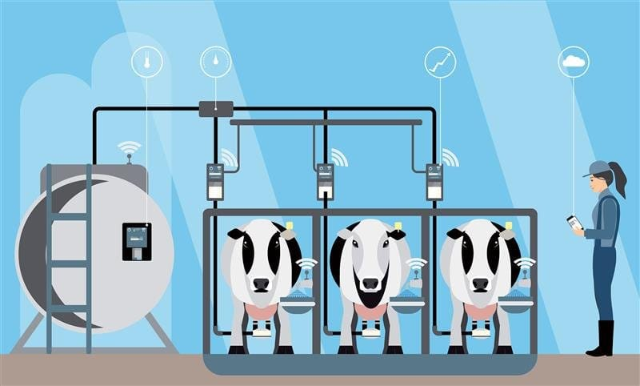

A indústria do leite no Brasil é uma das mais importantes do setor agropecuário, com uma significativa produção e consumo interno. Aqui estão alguns pontos chave sobre a indústria do leite no Brasil:
1. Produção de Leite:
O Brasil é um dos maiores produtores de leite do mundo, com destaque para estados como Minas Gerais, Paraná, Rio Grande do Sul, Goiás, e São Paulo. A produção de leite no Brasil é majoritariamente proveniente de vacas, com milhões de pequenos e médios produtores rurais contribuindo para o setor.
2. Características da Produção:
A produção de leite no Brasil é caracterizada por uma grande diversidade, com propriedades rurais que variam desde pequenas fazendas familiares até grandes agroindústrias. O país possui uma vasta extensão territorial, o que permite a produção de leite em diversas condições climáticas e geográficas, embora o Sul e o Sudeste sejam as regiões mais produtivas.
3. Mercado e Consumo:
O leite fluido é amplamente consumido no Brasil, além de produtos derivados como queijos, manteiga, iogurte e leite condensado, este último bastante popular no país. O mercado de lácteos no Brasil é competitivo, com várias marcas regionais e nacionais disputando o consumo interno.

4. Exportações e Importações:
O Brasil exporta produtos lácteos, principalmente para países do Mercosul e do Oriente Médio, embora o volume de exportação seja relativamente pequeno em comparação à produção total. O país também importa produtos lácteos, especialmente leite em pó, para complementar a demanda interna em períodos de menor produção ou altos custos de produção.
5. Desafios e Oportunidades:
A indústria enfrenta desafios como a oscilação dos preços do leite, custos elevados de produção, e a necessidade de melhorar a produtividade e a qualidade. Existem oportunidades para a expansão de mercados de produtos lácteos orgânicos e gourmet, além do desenvolvimento de produtos com maior valor ag
6. Sustentabilidade:
A sustentabilidade é uma questão crescente na indústria do leite no Brasil, com iniciativas focadas na redução do impacto ambiental, bem-estar animal, e uso racional dos recursos naturais. O governo e organizações do setor estão promovendo práticas mais sustentáveis, como a adoção de sistemas de produção integrada e tecnologias que aumentam a eficiência.
7. Inovações e Tecnologia:
A tecnologia tem avançado no setor, com a implementação de técnicas modernas de manejo, melhoramento genético, e uso de ferramentas digitais para gestão das propriedades leiteiras. Programas de assistência técnica e capacitação de produtores têm sido fundamentais para a modernização da produção leiteira no país.
8. Importância Econômica:
A cadeia produtiva do leite é uma importante fonte de renda para milhões de brasileiros, especialmente em regiões rurais. A indústria do leite contribui significativamente para a economia do agronegócio, sendo um setor vital para o desenvolvimento rural e a segurança alimentar no país.